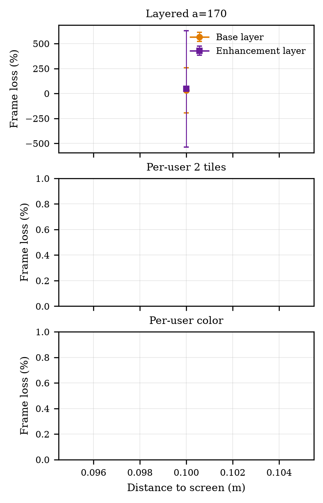
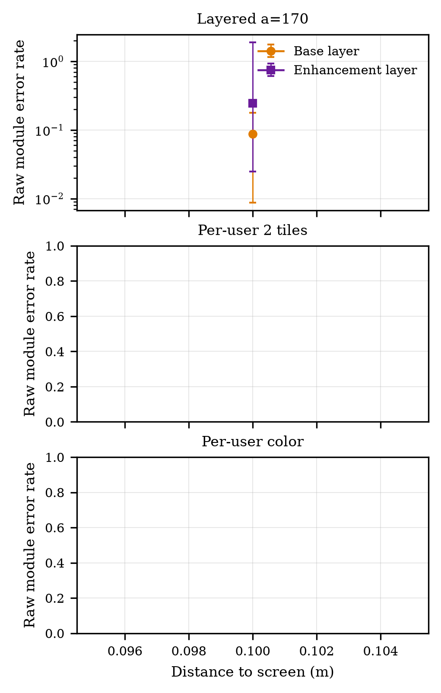
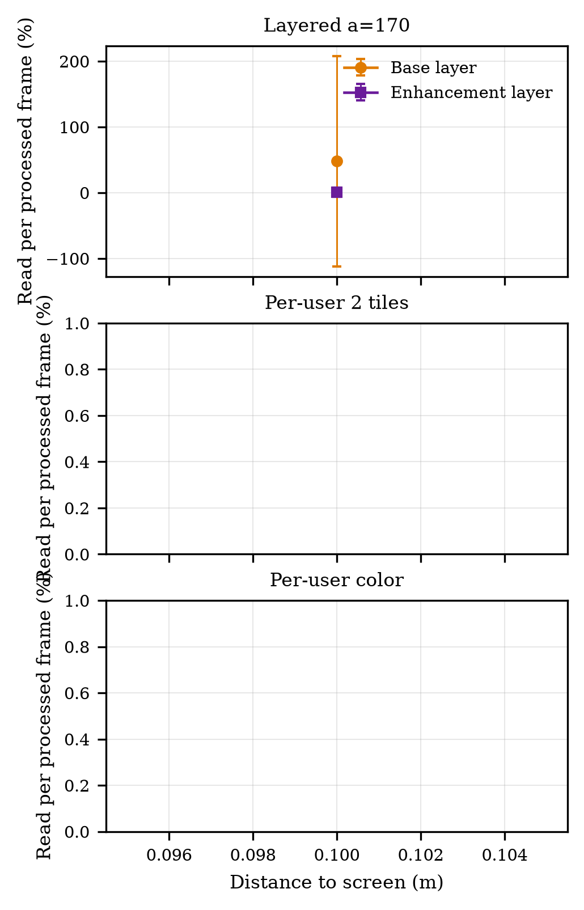
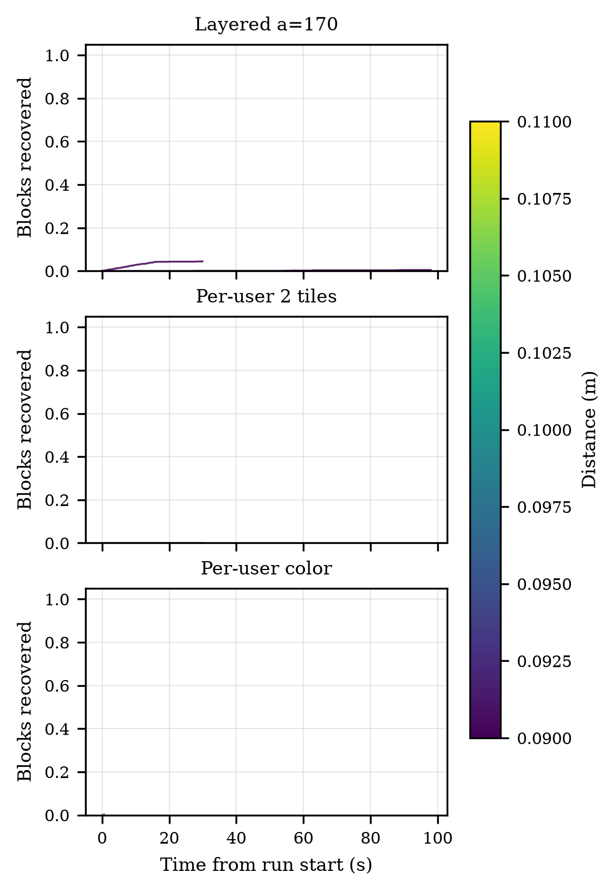

QR Lab Results
6 runs, 1929 processed frames and 381 QR reads from 2 dataset file(s). Updated 2026-10-23 08:27 UTC.
| Scheme | Distance (m) | Runs | Frame loss | Module errors | Completion (s) | Goodput (B/s) |
|---|---|---|---|---|---|---|
| Layered a=170 | 0.1 | 2 | 38.7 % | 9.0e-02 | – | – |
| Per-user 2 tiles | – | 2 | 0.0 % | 4.6e-01 | – | – |
| Per-user color | – | 1 | 0.0 % | 4.1e-01 | – | – |
| – | 0.1 | 1 | – | – | – | – |




Files
- summary_by_scheme.csv · summary_by_scheme.tex
- summary_by_stream.csv
- METHODS.md (metric definitions)
- Figures as PDF: tap any figure.